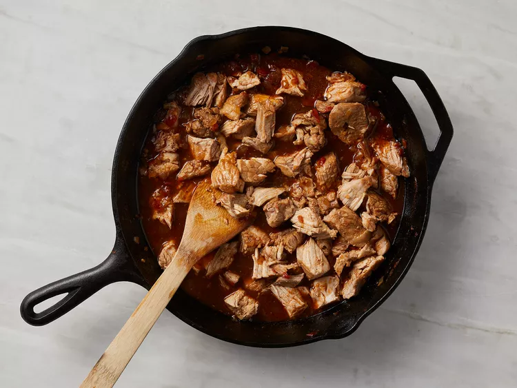

Method
-
Heat vegetable oil in a skillet over medium heat. Add onion; cook and stir until softened and translucent, about 5 minutes. Season with salt.
-
Stir in ginger, tomatoes, and pork chops. Cover and reduce heat to medium-low. Turn the pork occasionally, until browned.
-
Pour in water and tamarind soup base. Bring to a boil, then reduce heat and simmer until the pork is tender and cooked through, about 30 minutes.

-
Stir in green beans and cook until tender.